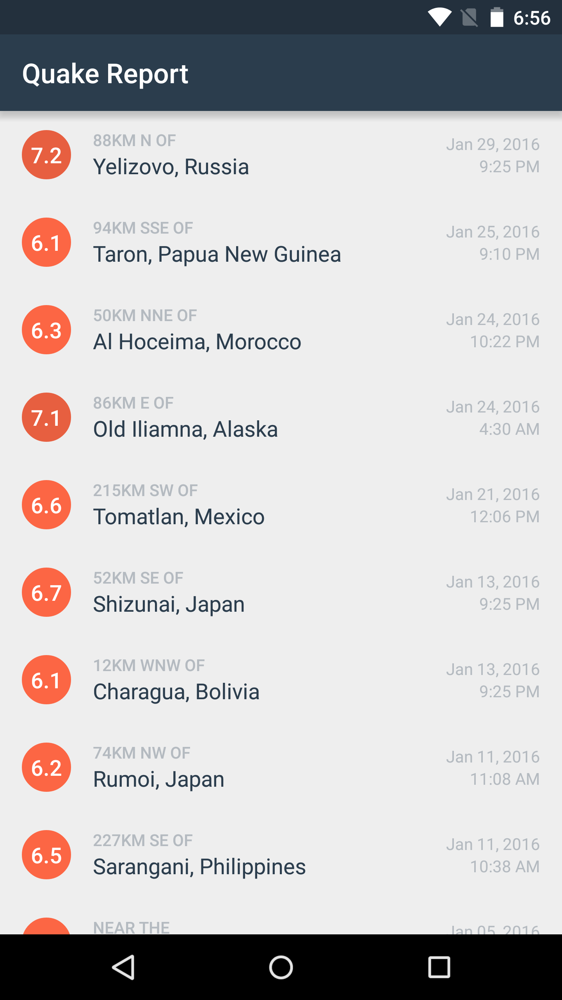

25. Visual Polish
Visual Polish
We’re going to add some visual polish on the list. Normally, we would do this step at the end of building an app, but since we’re already focused on UI changes in this lesson, we’ll take care of them now.
New colors
Add these new colors to the res/values/colors.xml file. They will be referenced later in the earthquake_list_item layout that we provide you.
<!-- Text color for the details of the earthquake in the list item --> <color name="textColorEarthquakeDetails">#B4BAC0</color> <!-- Text color for the primary location of the earthquake in the list item --> <color name="textColorEarthquakeLocation">#2B3D4D</color>
List item layout
Update the earthquake_list_item.xml file with the provided layout. We have fixed up the font styling, padding, and positioning of the views to reflect the design mocks. You can use the view IDs we provided, or modify the layout file to use the view IDs that your Java code already depends on.
<LinearLayout xmlns:android="http://schemas.android.com/apk/res/android" xmlns:tools="http://schemas.android.com/tools" android:layout_width="match_parent" android:layout_height="?android:attr/listPreferredItemHeight" android:orientation="horizontal" android:paddingEnd="16dp" android:paddingLeft="16dp" android:paddingRight="16dp" android:paddingStart="16dp">
</LinearLayout><TextView android:id="@+id/magnitude" android:layout_width="36dp" android:layout_height="36dp" android:layout_gravity="center_vertical" android:background="@drawable/magnitude_circle" android:fontFamily="sans-serif-medium" android:gravity="center" android:textColor="@android:color/white" android:textSize="16sp" tools:text="8.9" /> <LinearLayout android:layout_width="0dp" android:layout_height="wrap_content" android:layout_gravity="center_vertical" android:layout_marginLeft="16dp" android:layout_marginStart="16dp" android:layout_weight="1" android:orientation="vertical"> <TextView android:id="@+id/location_offset" android:layout_width="wrap_content" android:layout_height="wrap_content" android:ellipsize="end" android:fontFamily="sans-serif-medium" android:maxLines="1" android:textAllCaps="true" android:textColor="@color/textColorEarthquakeDetails" android:textSize="12sp" tools:text="30km S of" /> <TextView android:id="@+id/primary_location" android:layout_width="wrap_content" android:layout_height="wrap_content" android:ellipsize="end" android:maxLines="2" android:textColor="@color/textColorEarthquakeLocation" android:textSize="16sp" tools:text="Long placeholder location that should wrap to more than 2 lines of text" /> </LinearLayout> <LinearLayout android:layout_width="wrap_content" android:layout_height="wrap_content" android:layout_gravity="center_vertical" android:layout_marginLeft="16dp" android:layout_marginStart="16dp" android:orientation="vertical"> <TextView android:id="@+id/date" android:layout_width="wrap_content" android:layout_height="wrap_content" android:layout_gravity="end" android:textColor="@color/textColorEarthquakeDetails" android:textSize="12sp" tools:text="Mar 6, 2010" /> <TextView android:id="@+id/time" android:layout_width="wrap_content" android:layout_height="wrap_content" android:layout_gravity="end" android:textColor="@color/textColorEarthquakeDetails" android:textSize="12sp" tools:text="3:00 PM" /> </LinearLayout>
To preview the layout, you can switch to the design pane in Android Studio, or you can run the app on your device.
Notes:
For details on the specific attributes, check out the TextView documentation. Specifically, the ellipsize and maxLines attributes are probably new to you. These two attributes mean that if the text in the TextView is longer than the number of maxLines, then we can add an ellipsis (“…”) within the text (such as at the end of the text).
A lot of the positioning was done with the layout_gravity attribute, which is a LinearLayout layout parameter, just like layout_height and layout_width.
Hide divider between list items
To hide the divider between list items, there are two attributes that you can set on the ListView XML element within the earthquake_activity.xml file. We want to set android:divider to be “@null” and android:dividerHeight to be “0dp”.
<ListView xmlns:android="http://schemas.android.com/apk/res/android" android:id="@+id/list" android:orientation="vertical" android:layout_width="match_parent" android:layout_height="match_parent" android:divider="@null" android:dividerHeight="0dp"/>
Result
After all of those code changes, your app should look like this!
